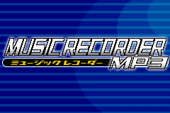

Old School
Imagine this scenario for a moment. The year is 2002. Most of your music is physical, coming from CDs bought at your favorite electronics store (RIP Circuit City). When artists drop new albums, you and your friends sometimes head down to the mall to check out the latest stuff for sale. There is no YouTube. Streaming music was just called "the radio". If you want to listen to music on the go, you pull out your CD Walkman, slap that 'ol disc on that spindle, and hit PLAY. You keep hearing about these "MP3 Players" like the Apple iPod that let you listen to hundreds of digital music files, maybe even your entire library! But... at this point in time, they're all still relatively expensive. Unless it's your birthday or the holidays, a jobless teenager isn't going to be replacing that CD player soon.
.jpg){kind=link}
Although MP3 players weren't new technology in 2002, many models still had high prices, keeping them out of reach for younger folks, outside of receiving them as gifts. Even so, the digital media revolution was well underway, and some companies were determined to lower the cost of entry, especially for an important market segment. Actually manufacturing a cheaper product doesn't magically happen overnight, so some creative thinking was necessary. As previously discussed in other Edge of Emulation article, one way to save money on hardware is to make add-ons for existing devices. By targeting a platform already in use, companies spend less resources building everything from scratch. If a consumer already has access to that said platform, it's often a better deal to buy the add-on than to go with a standalone device. This was the case with the Pocket Sonar (for portable fish finders), Jaguar and Singer's sewing machines (for digital sewing), and the Advance Movie Adapter (for portable digital video).
Kemco decided to use the Game Boy Advance to do the same with MP3 players. On November 15, 2002, they released the Game Boy Advance Music Recorder. This specialty cartridge not only allowed users to load and play music files, it also featured several recording options. It captured audio for various activities: ripping music, taking voice notes, and even karaoke mixing. Typically, such exotic hardware on the Game Boy originating from Japan tends to stay in the country. Fortunately, the Music Recorder came to North America the following year, distributed by Radica Games as the Gamester GBA Jukebox. At the time, it sold for 9800 yen, or about $72 USD, which in today's economy ballparks around $119. Considering that some other MP3 players would easily double or triple that amount in 2002, Kemco made a compelling offer.
The GBA Jukebox is yet another interesting and innovative use of Nintendo's handheld, turning what should be a dedicated gaming system into a mobile computer. Even though it has absolutely nothing to do with games, it deserves to be preserved via emulation. The Game Boy, after all, has a rather long history with these kinds of things. I readily began researching it, however, not without a bit of hestitation at first. Certainly GBE+ has emulated a bunch of weird, non-gaming things over the years, including robot dinosaurs and racetracks. Certainly I've crossed a line (or multiple lines) not many emudevs are willing to. Certainly at this point, there might even be a little bit of "feature creep" given all the stuff there is to emulate on the Game Boy.
Was I willing to turn GBE+ into a what is essentially a fully functional media player? Although the GBA Jukebox isn't as extensive as programs like VLC or WinAmp, implementing this sort of hardware an emulator is definitely some kind of escalation, even for me. I mean, it plays back arbitrary audio files, records different types of content, and does freakin' karaoke of all things! Karaoke! After all the strange and unusual stuff I've emulated, the whole idea seemed nuts to me. But, when your mantra is "emulate everything", you can't leave anything behind.
Opening Act
I must admit, at first, I had no idea the GBA Jukebox was even a thing. I'd heard it mentioned just once on Discord randomly, but I dismissed it as another unlicensed piece of hardware. The name, after all, sounds fairly generic. It wasn't until someone pointed it out specifically to me that the Jukebox was officially licensed by Nintendo. My goal is to preserve officially licensed items over unofficial ones first, so suddenly the Jukebox had my attention. Despite being over 20 years old, the GBE Jukebox can be easily found online brand new. Japanese versions are generally lower in price, so I went with that one.
Unlike many other Game Boy Advance cartridges, the Jukebox didn't come in a box. Rather, it was attached to a piece of cardboard and encased in plastic. The package itself came with a bunch of accessories for buyers: headphones, aux cables, 1 AA battery, and a CompactFlash memory card. The JukeBox has a slot where users could insert the storage medium. The packaged card had a paltry 8MB capacity. I know this was a freebie, but even by 2002 standards... it was insulting. Back then, I was still using 3.5 inch floppies for schoolwork. Kemco's little card couldn't even hold 6 full floppies. However, this CompactFlash card did have a cool sticker on the front, so, there's that. Thankfully, the American version came with a small but respectable 32MB card, something that could actually hold a decent number of songs at lower bitrates.
The cartridge itself has a large, bulky white plastic shell. Another version in all black was also released. It was designed for the original GBA, hooking over the top of the console, arching over the back, and almost completely covering the batteries. On the inner face, a series of rubber buttons are exposed. Their purpose is to allow the Jukebox to play music even when disconnected from the GBA. There are controls for starting and stopping a track, moving forward and backward through the playlist, and increasing or decreasing the volume. To this end, the cartridge has a headphone jack of its own, so it doesn't have to rely on the GBA for audio output. This is where the AA battery comes in handy as well. Additionally, the Jukebox has an embedded microphone at the top, and a Line In jack for capturing external audio. Finally, a red LED at the very bottom of the cartridge lights up whenever it's doing something (possibly related to CompactFlash operations).

The GBA Jukebox and Kemco's 8MB CompactFlash card (latter enlarged to show detail).
Needless to say, there's a lot details to cover when talking about the Jukebox. Unlike the Advance Movie Adapter, nothing aside from the cartridge's ROM needs to be dumped to start emulating the device. No firmware. No fancy memory cards. No encryption or copyright protection schemes. Just about any GBA emulator can boot the ROM. Kemco's logo shows up for a few seconds before an error screen pops up shortly thereafter, complaining about the battery. While it would have been wonderful if at least a menu or two would display, it was immediately clear to me that the Jukebox was probably trying to talk to the special hardware inside its cartridge. If an emulator didn't handle that, the Jukebox's programming was bound to come across problems.
A number of potential problems await emulators that don't correctly respond to the Jukebox's hardware.
Every memory location the GBA used as input or output for the Jukebox was entirely undocumented, so my first order of business was to see what kinds of reads and writes the ROM requested. I setup some debugging code in GBE+ to catch reads and writes in areas most software normally wouldn't touch. Right away, GBE+ flagged activity in the 0xB000000 region, so I took a closer look at what was happening. I ended up getting something like this:
At first glance, a pattern somewhat emerged. It seemed like the registers at 0xB080000 and 0xB0A0000 were always used as input to get output from 0xB0C0000 and 0xB0E0000. Writing to one memory location generated a response from another memory location. To my eyes, it looked like the former was taking on the role of some kind of "index" for some sort of array or data field, while the latter was the data itself. For simplicity, I named them ZMP_INDEX and ZMP_DATA, where "ZMP" is a reference to the 3-letter code assigned to GBA software as part of a larger 10-character code. The Jukebox happens to use that sequence. I could have used the more sensible "JUKEBOX_" prefix instead, but I'm lazy and don't want to type that out every time.
Digressing, I also noted that the index and data registers were apparently 16-bits in size, but split across different addresses. That is to say, to write the full index, the bottom 8-bits and then the top 8-bits both have to be written. Although this was slightly odd to see, it still made perfect sense in a way. So, now I knew that the Jukebox was probably looking for some sort of return value when polling ZMP_DATA. After setting up some quickly hacked together code in GBE+ to handle reading and writing to the Jukebox's registers, I also made the emulator return zero for every until I knew exactly what the real values were supposed to be. Surprisingly, this allowed the Jukebox to boot into the next phase, a loading screen of all things. Afterwards, I was taken to the Jukebox's main menu.

By correctly handling a few registers, it's quite easy to fully boot up the Jukebox's software.
Typically, I wouldn't expect the software to run properly when returning zeroes for all indexes, but apparently that was fine for the Jukebox. Sometimes, hardware is designed such that non-zero vlaues indicate errors. This was evidently the case here. As the Jukebox continually pinged different indexes, I began documenting everything it was trying to read or write. This process was quite easy. When doing things such as changing user settings, adjusting the volume, or messing with the equalizer, the Jukebox's software automatically knows which values to write at which index. For most of the Jukebox's configurable features, all I had to do was observe and record what it was doing during various operations. GBE+ didn't actually have to do anything with these indexes since it was't emulating much about the Jukebox just yet.
Some indexes, however, required a bit of reverse-engineering to fully comprehend how they functioned. By that, I mean throwing random values at them and seeing what happens. The index for the battery level, for example, required me to poke around a bit to figure out its exact behavior. Evidently, a value of 0x00 represented full strength, a value of 0x01 represented mid-strength, and 0x02 represented a nearly empty battery that needed changing. At first glance, it seemed kind of backwards, and certainly not my first guess on how it would have worked.
Another interesting index that needed a fair bit of experimentation was the progress meter for erasing a CompactFlash card. The Jukebox helpfully allows users to wipe the entire card if they so choose. A little bar appears on-screen that shows how far along the formatting process is. The software reads a specific index on the Jukebox that describes its completion percentage. After spraying that index with all kinds of numbers, I was finally able to determine that the meter accepts values between 0x0000 and 0x8000 for 0% all the way to 100%. Amusingly, the Jukebox will process any 16-bit value all the way up to 0xFFFF, meaning the formatting process can reach all the way up to 199%! While this doesn't happen on real hardware, it was fun to see the ROM made no effort at validating the index.

When you want to be absolutely certain, always format your storage at 199%!
Creating a playlist
Dealing with indexes related to the Jukebox's status and configuration settings was only the first step towards understanding and emulating the device. Beyond that, I'd have to dive deeper and explore the commands it used for playing and recording music. These commands composed the bulk of the Jukebox's operation. Nothing on the cartridge happens unless the software writes a command. Before anything else, I had to see exactly how these commands were issued. While looking at some logs from GBE+, I noticed that when I performed certain actions, such as entering the music menu or formatting the CompactFlash card, the software would always write a single digit to the 0x80 index. This value, an ID so-to-speak, changed depending on the current task, therefore, it had to be the mechanism for sending commands.
After cataloging a bunch of command IDs, it was time to start emulating at least the basics of the Jukebox: displaying a list of songs. For the moment, I held off on actually trying to play anything. I just had to find out how the music menu worked and fill it with dummy data representing fake music tracks. Once the user chose the music menu from the main screen, the Jukebox would send out a command requesting data for all music files loaded on the CompactFlash card. It must be noted that the GBA doesn't interface with the CompactFlash card directly. No low-level access was granted. Rather, everything was done high-level, using the Jukebox's commands and registers to retrieve information. Following the command to grab music files, the Jukebox started reading a wide range of unknown indexes. Yet again, I turned to the classic and very scientific methodology of using random values to see what stuck.
One index controlled how many music tracks the Jukebox detected. If that was set to zero, the software acted as if no MP3s were available. Changing that to a non-zero value allowed the Jukebox to display icons representing different songs. Furthermore, with a fair amount of trial and error, it became clear that there were 3 different strings being used for each song: the filename, the song title, and the artist. The data for these came in a cluster of sequential indexes. Thankfully, it was sufficient to simply write ASCII text here, which the Jukebox happily accepted. The filename was merely the 8.3 MSDOS-style name of a song as it was stored on the CompactFlash card. The other 2 fields were extracted from the MP3s ID3 tags. At first, GBE+ would manually embed dummy data for one song for testing purposes. The next step was be to dynamically load data for multiple songs chosen by a user.
To solve this problem, I merely had GBE+ import a text file with all of the necessary information. Each line of text represented the song's location on the user's PC, the duration of the song in seconds, and the song's title and artist. This design had a few advantages over other options such as scanning a specific folder for any music files. First, it greatly simplifies the process of collecting certain data necessary for playing music files. The song's duration, for example, can easily be determined without having to actually load the the music file. By having the file path already written out, music files can be stored in subfolders, different folders, or on completely different drives. The text file's song order also acts as a playlist that can easily be edited. Another neat bonus is that a song's title and artist metadata can be associated with a music file even if the file format itself doesn't support metadata (such as raw PCM files).
"How do I make a music playlist?" isn't something many emulators have to think about.
For the end user, setting up the text file can be bit of a hassle. Most people don't know the exact number of seconds for their favorite tracks. However, using a GBA emulator to play regular music files isn't something most folks are going to do, so I felt it was a fair trade-off. Once GBE+ could load this text file, it could feed the Jukebox's software the strings it used when displaying songs. At this point, I could enter the music menu and browse multiple songs. If I added 5 music files to the text file, 5 entries would pop up in the Jukebox, complete with their metadata as well. Everything was going to plan so far. The situation was not so good when I actually tried playing a song. GBE+ wasn't set up to actually read the music files or play any sound from them, but I had hoped to at least see the Jukebox software move to the screen used when playing music. Instead, it just froze up.
My first intuition was that the Jukebox was waiting for a status change of some sort. It wouldn't be odd for the hardware to change states for "NOT PLAYING MUSIC" and "PLAYING MUSIC" or something along those lines. The software was likely waiting to acknowledge this transition. During this period, the Jukebox software was actually reading several indexes multiple times per frame, so one of these likely held the key. Debugging this was a bit of a pain. Some of the code I'd added to GBE+ to emulate the Jukebox was inadvertedly interfering with the way the emulator marked read and write breakpoints, which prevented me from seeing when these indexes were accessed in ROM. Fortunately, with a workaround (i.e. dirty hacks) I was able to force GBE+'s debugger to halt when the Jukebox used these indexes.
The culprit turned out to be index 0x82. This was used to represent the Jukebox's CompactFlash status during all operations. It even had several states indicating whether it was playing Music, Voice Memos, or Karaoke, and seperate states for recording each. The code was very clear that these states had unique 16-bit values. In many cases, if the CompactFlash status index had some other value when the Jukebox was performing a certain task, its software waited indefinitely for that index to change. I tracked down every instance of the Jukebox reading the CompactFlash status index. Each time, the software would load a hardcoded 16-bit value from ROM, so I made a list of them all along with the operation it belong to.
On closer inspection, it's pretty apparent that these 16-bit states are actually bit fields. They follow logical patterns about which bits are set for a given task. The one for Karaoke Recording is slightly different because it's the only mode with simultaneous audio playback and recording. By correctly setting this status index, GBE+ was able to access most of the menus without freezing! It could also "play" songs, which basically amounted to showing a screen that displayed the song's current timestamp. This was controlled by another index as well (a pair of indexes, really). Rather than counting up from a timestamp like 0:00, it counts down from the total length of a song. Although such a choice may seem odd, it makes sense given that the Jukebox software doesn't have a trackbar indicating the current position in a song. Counting down, rather than counting up, lets the user know when the song is ending.
The Jukebox uses 2 indexes for this countdown process: one for minutes and one for seconds. Once both reach zero, the song is finished, and the Jukebox moves onto the next. On real hardware, this process is automatic. In GBE+, however, the emulator has to manually handle things. For certain peroidic tasks, such as determining how long to show on-screen display messages, GBE+ uses a system's VBlank (frame redraw) as a sort of cheap scheduler. For the most part, the track countdown works as expected, however, it's vulnerable to the emulator running faster or slower than fullspeed. In the future, ideally this needs to be directly tied to the actual progress of whatever song is being played. For now, it's decent enough for demonstration purposes.
Riding the WAV
With all of the menus up and running, it was time to take a bigger step: loading and playing a genuine music file. This was an area which presented several problems. My first concern was about reducing bloat in GBE+. I aim to keep dependencies for the emulator at a minimum. The command-line version needs only SDL2 and OpenGL 3.3, with GLEW being mandatory if using Windows. Qt and SDL2Net are optional for the GUI and netplay, respectively. I'd very much like to keep it that way. I'd rather not add SDL_Mixer or some other library, as a matter of principle. My other concern was falling victim to Not Invented Here Syndrome and trying to add support for various music formats myself, in which case, GBE+ would end up with bloat of a different kind. Fortunately, a middle ground was found.
While MP3s are out of the question, SDL thankfully has the ability to playback WAV files. It can natively open them and provide GBE+ with a buffer of all the sound samples. Although WAVs often have a reputation for large filesizes, they can use lossy compression algorithms such as ADPCM to slim down quite a bit, 4:1 in a lot of cases. SDL helpfully supports Microsoft ADPCM and IMA ADPCM. With that issue sorted out, GBE+ could now grab a song's sound samples and begin to play them. The Jukebox has two audio outputs: the GBA's speakers and its own headphone jack. When processing audio through the handheld's speakers, the hardware automatically converts MP3s into usable 8-bit samples for the system. The software collects these samples from a series of indexes, copies them to RAM, then feeds them into the GBA's sound FIFO. The process repeats as long as needed for the length of the song.
For the time being, however, I decided to emulate the easier path, outputting audio that users would normally hear through the headphones. Here, rather than converting MP3s into samples for the GBA, Jukebox's hardware decodes the file and plays it directly. Essentially, the audio would be the same as if a regular PC were playing it, for the most part anyway. To recreate that, GBE+ just plays the music file... as a music file. As trivial as it seems, this is a way to get the Jukebox more or less functional in an emulator. While at the time of writing this article, I have not implemented support for "GBA Samples", I made sure to set up the infrastructure to allow that in the future. Eventually, I do plan on returning to the Jukebox and adding that feature. Seriously, who doesn't love hearing their favorite songs mangled by low-quality audio?
When GBE+ was first made, the GBA core's audio emulation only handled samples for the system's 4 pulse-width modulation channels, and its 2 DMA sound channels. For the Jukebox, I had to create a new, distinct "external" audio channel that was technically unrelated to any of the others. This external audio channel will hopefully come in handy for other GBA cartridges that also output sound through a headphone jack, such as the Play-Yan. Actually playing the song itself wasn't all that difficult. It was just a matter of mixing samples from the song into GBE+'s final audio output stream. The biggest concerns were mainly related to properly scaling which samples were grabbed depending on the song's input frequency and GBE+'s output frequency, but that's was taken care of by calculating a basic ratio. The only obvious problem that I left unresolved was that audio playback here wasn't tied to emulation speed. Again, it's an area I intend to come back to later. The interim goal was to build a fully-working model that emulated the Jukebox at a reasonable level, all the while remaining open for future improvements to accuracy and faithfulness.
Needless to say, once that was implemented, GBE+ could play a chosen song. To recap, the emulator pulled the filename and metadata from a text file, opened a WAV file and stored the samples to a buffer, then mixed those samples for audio output when playing a song. Commands for starting and stopping a track or moving up and down the playlist were processed, and the index used for volume was implemented as well. The result was the first meaningful recreation of the Jukebox. I was able to scroll through the music menu, select individual music files, and hear them correctly play on my computer. As a further detail, the Jukebox uses incoming samples for a spectrum analyzer visualization effect, if enabled. It displays 9 bars that represent the sound amplitudes of various sequences within a song. This is mostly just there to look pretty in media players, and the Jukebox is no different. As expected 9 indexes were responsible for holding the value of each bar. As GBE+ played a song, it averaged those samples and used that for the height of the analyzer's bars. Every few frames, the indexes are updated, and the Jukebox's software changes the on-screen visualization.
The Jukebox offered a total of 3 different visualizers. The middle one featured an animated dancing man.
Finding your voice
The Jukebox was used for recording audio as well, so GBE+ had to handle this aspect of the device as well. This was new territory for me, however. Despite all of the rare and strange hardware I've looked at over the years, none of them required me use a microphone. It's rather astonishing in hindsight given the wide range of accessories for the Game Boy. The closest thing would be the hyrdophone on the Pocket Sonar. As a fun fact, I actually had plans to make GBE+ compatible with a custom-built sonar system just for the Pocket Sonar. I managed to make the hydrophone part (cheap microphone water-proofed with a plastic tube and a balloon), but nothing further, least of all a working method of pinging objects. Other than that, I had no experience dealing with microphones, and certainly not programming for one.
SDL once again came to my rescue, as it supported microphone recording out-of-the-box. After reading the documentation and playing around with the examples, I was able to capture my voice on my gaming headset. From there, GBE+ merely had to save whatever samples it had collected from the microphone to a file. Merely indeed... The catch here was that while SDL was perfectly happy with loading WAVs, it had no means to write a WAV file. To be fair, the WAV file format is a container. It encapsulates audio data, and the audio data itself can be various different formats. A WAV file isn't the same as raw PCM data, even though a WAV file could contain raw PCM data. While opening a WAV file is simple because all of the details are already specified in the target file, saving a WAV file requires deciding on things like audio format, compression, and even metadata fields. So, in one sense, not a simple thing to add to an API, so it's understandable why this was omitted from SDL.
Since SDL isn't equipped to deal with this, GBE+ had to handle saving WAV files manually. This turned out to be quite straightforward. The typical, minimal WAV file is nothing more than a larger header plus the audio data chunk itself. The header contains information such as the audio format, number of channels, sample rate, etc. All GBE+ had to do was construct a proper header, then stick that on top of the audio chunk, then save it to a file. Obviously, GBE+ offers no compression, so recordings can get somewhat large quickly, although with today's storage, that's not really a problem. The WAV files GBE+ produced were valid and accepted in standard media players such as VLC. The code used create the WAV header was really small as well. In just a few dozen lines, the emulator could not make its own playable audio files.
It would have been great if that were the last problem with recording, but another issue appeared when using the microphone. While recording, the Jukebox polled the microphone several times per-second to grab the current volume. It used this to display a small meter on-screen, so users could measure the force of their voice. The meter takes its value from an index, so GBE+ polled its own microphone as well and fed this to the Jukebox. It worked, kinda. Instead of updating multiple times per-second, it was updated just a handful of times. This was quite odd, as GBE+ should have been updating that index after a set amount of samples were received in real-time. It wasn't at all smooth like most people would expect an active volume bar to look like. Puzzled, I forced GBE+ to alert me with a message each time it updated the index so I could see when exactly it was trying to do its job.
As it turned out, GBE+ was indeed barely updating the volume index more than a few times per second, however, I managed to immediately identify the cause. It was something of a quirk related to how SDL processes sounds. Audio runs in its own thread, and a designated callback function can be invoked whenever it needs to handle samples. This usually occurs whenever a buffer of a specific size is filled. The larger the buffer, the slower it is to fill. The smaller the buffer, the quicker it is to fill. I reduced the buffer size for the microphone in GBE+'s code, but to my dismay, the buffer size didn't actually change when setting up audio. My "suggestion" for a smaller buffer had been politely declined and overridden by the presumptuous PulseAudio. For those that don't know, PulseAudio is sound server used on Linux distros and other operating systems. It manages audio stuff between applications and the actual sound hardware. For whatever reason, PulseAudio wouldn't let GBE+ use a smaller buffer...
The solution was to just stop using PulseAudio as a sound driver for SDL. By switching the driver to ALSA, GBE+ could properly shrink the buffer and update the microphone volume in a timely fashion. The problem here is that it proved a bit cumbersome to actually swap drivers. It required setting an environment variable before the emulator set up anything audio related. With a bit of work, however, I was able to turn this into a configurable option. SDL can provide a list of usuable sound drivers it detects on a given computer, so this method is cross-platform. Users can override the default sound driver via the command-line, editing the .ini file, or through the Qt GUI.
Ordinarily, most users won't need to mess with the sound driver, but now they can if necessary.
On the Jukebox, all three modes (Music, Voice Memo, and Karaoke), use some form of recording. Voice Memo was the easiest to add to GBE+, since it just took whatever input and saved it to a file. Karaoke was a bit more involved. Two different audio streams (the original track and the user's vocals) had to be mixed together as one and then saved to a new file. Mixing two or more sound samples is pretty trivial, however. Recording music is a bit different on the Jukebox, as it doesn't use the microphone at all. On real hardware, the Line In jack receives audio signals from another source, such as a CD player. It could be anything that outputs audio over a 3.5mm jack too, such as another Game Boy. The signals are captured and automatically turned into an MP3 file, with users being able to choose between 64Kbps, 96Kbps, or 128Kbps bitrates. The Jukebox actually discards the MP3's header and renames it as a "GB3" file. This was presumably done to prevent other media players from accessing these recordings, perhaps out of concern for "piracy" or some such. Remember that this product was introduced in a world before YouTube and Spotify, and it felt like the RIAA would sue the pants off anyone who so much as whistled a copyrighted tune.
With a bit of work, on Linux at least, it was possible to use any application as a source for a "virtual microphone". Any application running on the host computer could then pipe its audio into GBE+, where SDL could take in those samples as if it were a real microphone. Although in general I'm not exactly fond of PulseAudio, it did easily allow me to reroute audio and accomplish this feat. As a bonus, GBE+ can detect a PC's Line In jack as a microphone and record samples just like a real Jukebox would have. The only thing GBE+ doesn't do is save the music to an MP3 file. For simplicity, the emulator only outputs uncompressed WAVs. In truth, this is also how the Jukebox saves Voice Memo and Karaoke recordings. For both of those, in an effort to save some space, the Jukebox lowers the final frequency to 11025Hz and has only a single audio channel. GBE+ does the same.
GBE+ can record audio from a PC's Line In jack just like the original hardware. The volume meter indicates high and low points of a song.
One particularly neat feature of the Jukebox's recording is something called "Silence Detection". It works for music and voice memos. The idea is that after the user hits the "Record" button, the Jukebox will automatically stop capturing audio after a certain amount of silence comes through the microphone, and all previously captured audio is saved to a file. For music, this was intended to help with CD ripping, where the gaps between tracks would split recording sessions into individual files. For voice memos, it just meant users had to stop talking and their recording would be saved. The volume threshold the Jukebox uses to determine silence can be adjusted. This is something entirely done in software, so the only thing GBE+ needed to do was correctly emulate the volume meter. Thanks to a selectable sound driver and real Line In recording, Silence Detection worked as expected.
Silence is golden
A few more odds and ends remained before I felt GBE+ could really give users a fairly decent impression of the Jukebox's capabilities. For music files, the Jukebox can rearrange the playlist and even delete entries. It uses commands for moving a song up or down 1 space in the list and another command for removing it altogether. Shuffling the playlist order was just a matter of switching around a few internal variables in GBE+ and then editing the emulator's text file containing information about music files. Deleting files was slightly more interesting. GBE+ would rebuild an internal list of all songs except for the one song that was eliminated, then it would update its text file. However, the real file was still there, occupying disk space. C++ can get rid of this with its std::filesystem::remove() function.
This really isn't much of a big deal if you're familiar with contemporary C++ standards and conventions. For me however, as someone who codes like it's still 2004, I only occassionally dip into C++11 and C++17 features when I really need something specific, and deleting a file is one such case. In the past, this functionality was not native to C++'s standard library, although it was possible to use the C library to remove files via cstdio. Instead, developers looking for a modern and cross-platform C++ solution would have to rely on additional libraries such as Boost, meaning yet another software dependency for an emulator. Thankfully a lot of ideas and concepts from Boost have officially migrated to C++ over the years. At this point, std::filesystem::remove() is old stuff, but for someone like me who hasn't kept up with the times (like at all), it was a bit of a relief to see how far C++ has come. Consequently, GBE+ now requires a compiler that supports at least C++17, but that's not a big ask as far as requirements go these days.
Karaoke recording on the Jukebox has a very useful function called "Voice Cancellation". This is a common process in many karaoke setups that strips the song's original vocals, leaving only the music and instruments. With this, users can then add their own voices. As one might imagine, this is not a simple thing to do. A lot of sophisticated math can be involved, depending on the algorithm used. Many professional karaoke setups are made by companies who have vast research budgets, and their formulas remain proprietary. There is, however, a somewhat cheap and quick way to mostly remove vocals. It generally only works with stereo audio, but in those cases the left and right channels can be used to silence sounds in the middle, which in many recordings ends up silencing vocals. A brief explanation of the math and concepts can be found on this SuperUser answer. This doesn't work 100% of the time because not every song is in stereo or it might not have vocals centered.
The method used by the Jukebox itself isn't perfect either, so for the purposes of gaining functional emulation of the device, using stereo-channel-cancellation (or whatever it's called) seemed fair enough. I decided, however, that it would probably be best for an external program to handle this for a couple of reasons. While this kind of vocal cancellation is easy enough for GBE+ to do in-software (in real-time too), I wouldn't want to limit it to just that method alone. If the user has other, more efficient means to suppress a song's vocal track, they should be able to use that. By telling GBE+ to use an external program, the emulator remains flexible and compatible with a wide range of solutions. For example, both sox and FFmpeg can be used depending on which one the user feels is best for them.
All GBE+ does is call the system() function, which allows it to run a command on the host computer. It takes a user-defined string as a parameter, which in this case will run a program of their choice to handle the voice cancellation. After the external program runs, a temporary music file will be deposited in one of GBE+'s folders, which will contain the manipulated audio. Voice cancellation on the Jukebox can be turned on or off with a push of a button. There are some cases in karaoke where particpants might not want to use that feature. Imagine trying to do a duet for one part of a song but going solo for another. As a result GBE+ can't just use audio with the vocals removed for the whole karaoke recording. Instead, GBE+ monitors when voice cancellation is activated and switches between using the original audio and the stripped-vocals version.
Since an external program was now used to handle voice cancellation, I figured it wouldn't be much of a stretch to have one take care of converting any files. Remember, GBE+ can only natively handle WAVs encoded with PCM or ADPCM audio. For everything else though, the user can specify their own program here to change the audio file into a playable WAV. The program will spit out a temporary audio file as well which the emulator can open with ease. The great thing about this is that it exceeds what the original Jukebox hardware was capable of. It could only handle WAVs and MP3s, but GBE+ can potentially play a host of formats such as AAC, FLAC, M4A, WMA, Ogg, and whatever combination of letters and numbers are out there. On the downside, setting this up isn't exactly user-friendly, but it does satisfy the job here, which was to preserve the overall experience of the Jukebox, which certainly involved its fair share of MP3s. Below is a brief video demonstrating the Jukebox's karaoke mode.
And now the moment everyone's been waiting for, my beautiful voice serenading a sweet karaoke solo.
Encore
At this point, I feel that GBE+ has a decently polished implementation of the hardware and its features. Certainly, there are a few areas that need additional work in the future, such as adding some kind of equalizer, but currently it should capture a lot of the device's functionality. This proved quite an adventure in terms of emulation. None of it was particularly hard, but there were many ways in which I was challenged to come up with creative workarounds. Overall, it was actually quite fun tackling the Jukebox and seeing everything come to life. As bewildering as it is to imagine my little project becoming a music recording karaoke mixing machine, it was oddly pleasant to see everything come together and working as it should.
Although the Jukebox did indeed leave Japan, quite unlike many unique Game Boy peripherals, it never gained much attention in the West. Everyone's eyes and ears were focused on bigger brands. Even though it was a relatively cheap MP3 player, it wouldn't hold that advantage for long. The market would evolve, storage would grow, and prices would fall. The Jukebox would ultimately become just one of many options available to consumers. Nevertheless, it has an important tale to tell, once again demonstrating how effective the GBA could be as a general computing platform. In many ways, Nintendo's handheld was well quite suited to be a music player (disregarding native audio quality). It was a well-known and well-established product widely available to millions, had a fantastic battery life, came with easily accessible buttons as input, and could display any manner of graphics for its user interface. Although the Jukebox was itself not a video game, its unique use of the platform is more than enough reason to see it preserved and documented.
And... that's it for 2022. By all accounts, it was a pretty intense year. Besides the other stuff I've shared here, the past 12 months has been rather insane in terms of development and reverse-engineering. As far as officially licensed hardware on the GBA, I'm pretty certain only 3 unique cartridges remain to be emulated, studied, and documented. I've taken to nicknaming them the "Triforce of Terror" due to the sheer difficulty they pose to researchers and the fact that I am a complete nerd. The Nintendo Play-Yan, a cartridge that accepts an SD card to play music and video files, known to use Game Pak IRQs liberally making it extremely hard to debug, and has 3 separate variants, each doing their own thing. Digital Act's Campho Advance, a camera-phone that enabled video chat via landlines, rare, expensive, and its ROM is currently undumped. Guidance Interactive's GlucoBoy, a diabetic blood-sugar monitor that uses glucose as reward points for several games, has an undumped (or just unreleased) ROM, and its hardware is so seldomly seen or photographed it's damn near mythical.
Each one of these "Terrors" is like a final boss waiting for challengers to come forth. It might be pretty gutsy of me to say this, but I honestly think 2023 could be the year we finally put an end to these unemulated peripherals. Such confidence does not come from nothing. GBE+ already has partial support for the original Play-Yan model, and many details of its operation have been exposed. Likewise, the Campho Advance is slowly but surely being cracked, day-by-day. The GlucoBoy is on another level, however, since it's so elusive. There are even some contemporary debates on whether the hardware still exists today (it does, I've seen semi-recent pictures). It's just a matter of preserving the ROM for the public and figuring out how the software and hardware interacted. Needless to say, successfully emulating each cartridge is still going to be a monumental undertaking. The next year will be quite a journey, that's for sure.
Not much hardware remains unemulated on the GBA, and there's already some progress on the last of them. 2023 LFG!